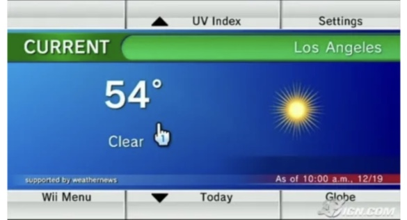
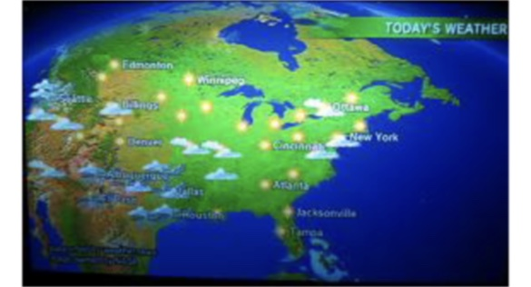

The Forecast Channel


The Forecast Channel was a standard feature on the Nintendo Wii that transformed the television into a dynamic weather station. Launched in late 2006, it utilized the Wii's 24-hour internet connection to provide real-time updates without the need for a computer.
The interface was designed for ease of use, featuring large, clean icons and the soothing background music characteristic of the Wii experience. Users could toggle between local forecasts and a broader national view with a simple click of the Wii Remote.
Learning About Our World
One of the most iconic features of the Forecast Channel was the interactive 3D globe. It allowed users to spin the entire planet, exploring weather conditions in cities thousands of miles away.

This encouraged a sense of global connection. Users could check the weather for a friend living in another country or learn about the climates of distant continents, all through a tactile, gamified interface that made information gathering feel like an adventure.
Legacy & Influence on Modern Tech
The Wii Forecast Channel was a pioneer in "dedicated informational apps." Before smartphones dominated our pockets, the Wii was one of the first mainstream devices to move weather away from scheduled TV broadcasts and into an on-demand digital space.
Today, we see the influence of the Forecast Channel in every smartphone. The concept of a dedicated, minimalist "Weather App" that provides instant, location-based data with visual flair was popularized by the Wii. Its legacy lives on in the widgets and apps we use daily to plan our lives and stay connected to the environment around us.